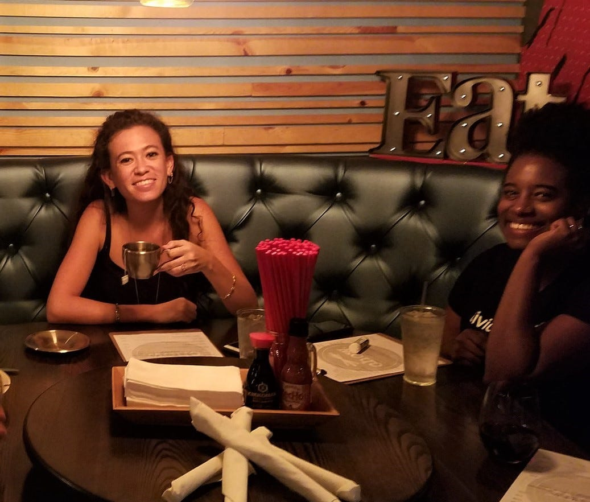
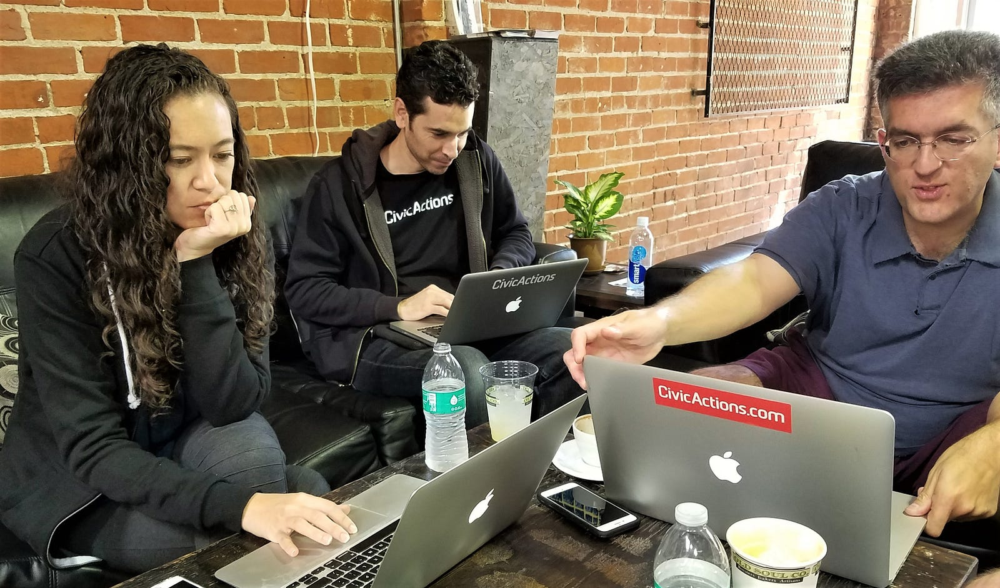
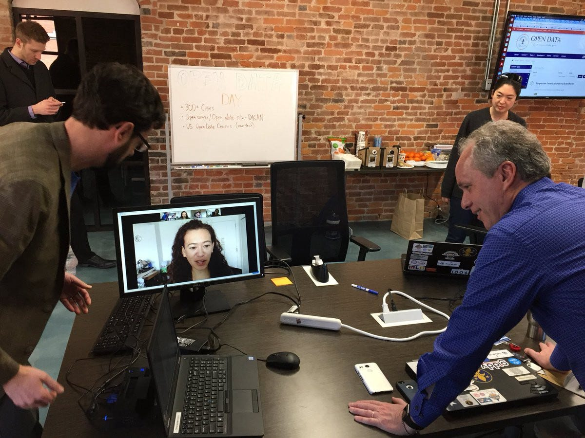
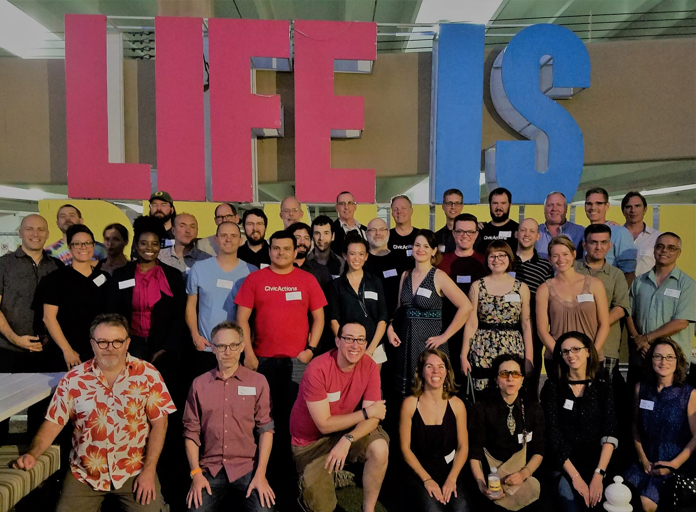
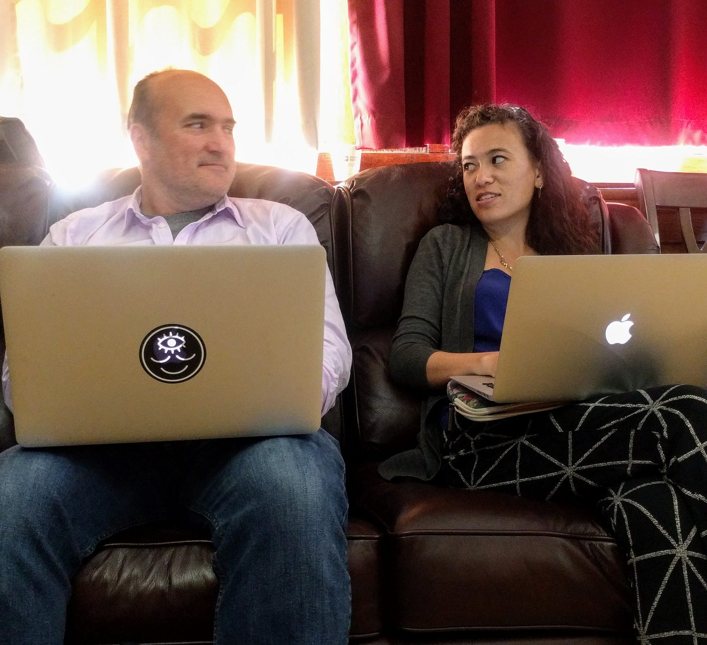
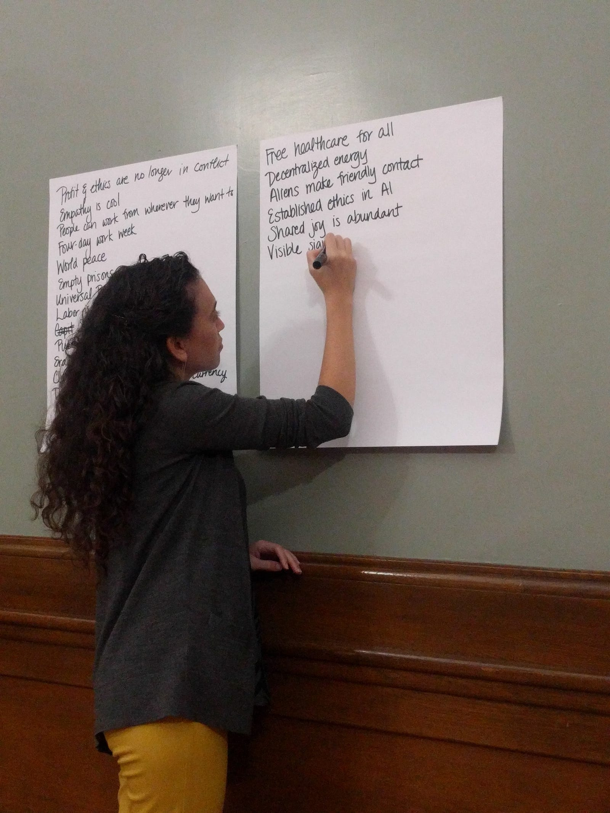
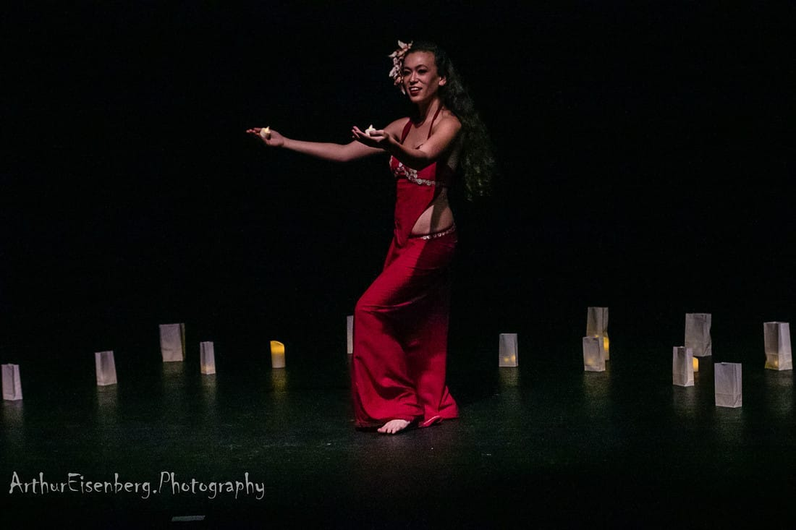

Kim’s eagerness to tackle new things has led her through several unique projects at CivicActions. In this article, she shares her secrets for success in managing large-scale government projects, her excitement about working with the government open data community, and why she sees a future for herself in the family-friendly culture of CivicActions. Oh, and the story of how she happened to co-found a Tahitian dance school in Manhattan!

How long have you been working at CivicActions and what brought you here?
I joined about three years ago as a Project Manager. I’ve always worked at companies that help people use technology for positive social impact, and CivicActions offered a chance for me to manage custom software projects for governments and civic organizations. I was awed by the scale of the first project I worked on.
What was the first government project you worked on?
We helped a federal agency upgrade its digital communications platform (GlobalNET) that served tens of thousands of users around the world. It was a 5-year, multi-million dollar project, so I worked closely with a seasoned teammate as I learned the ropes of large-scale project management. I was provided with all the support I needed to succeed.
“I was provided with all the support I needed to succeed.”
The fun thing about GlobalNET was the positive team dynamic — everyone at CivicActions was always happy to be working on it, even though it was a wildly complicated behemoth of a project, with a fair share of frustrating problems. The collaboration and patience of the team as they worked through the puzzles was inspiring.

What did you learn from working on GlobalNET?
The importance of being responsive, flexible, and creative — especially when working with a big team, multiple organizations, and layers of stakeholders! You have to be willing to re-evaluate and change course when necessary. I came onto the project a year before the new system was launched. We ran a massive user testing effort that turned up thousands of comments and issues, which we had to organize and address.
Then we launched websites for 18 different organizations within the agency in a huge staggered launch. When feedback started rolling in from the live sites, we modified our project management approach in order to handle all the emergency bugs. We’d gotten comfy in a Scrum rhythm doing two-week sprints, but we switched to Kanban for some added flexibility during this unpredictable time.
“You have to be willing to re-evaluate and change course when necessary.”
It was great that the agency was on board with agile methods — they had a Product Owner who was completely dedicated to the project and had full visibility into everything on both the agency and vendor sides. This allowed us to respond quickly to changes and ultimately deliver exactly the right product.
How did you start working with open data projects?
CivicActions assumed management of Project DKAN last year, which is a Drupal-based open data platform that organizations or individuals can use to publish and consume structured information in all kinds of ways.
So now I’m managing DKAN professional services engagements. I also organize people, priorities, and budgets across the different aspects of professional services, Project DKAN, sales, support, and product plans — and making sure all those parts work well together. I also work with the larger open data community to decide how DKAN should grow.
“In a way, the whole open data community is our client.”
It’s a unique situation because it’s one product that is deployed by many organizations in a variety of ways. We constantly ask, “How will this new feature affect other users? How should we update the roadmap based on incoming tickets? Does this align with open data best practices?”
In a way, the whole open data community is our client. We hold ourselves accountable to them and seek their input at every step. And we also budget for and prioritize the backend-type things like automated testing — which no client is going to ask for, but that are important to the health of the DKAN product.

What’s the best part of working with DKAN?
Definitely the spirit of collaboration within the open data community! It feels like we’re all in this together. Everyone takes ownership and wants the best for DKAN because it helps organizations use data to solve real problems.
“Everyone takes ownership and wants the best for DKAN because it helps organizations use data to solve real problems.”
It was sort of shocking, at first, how open and helpful our DKAN clients were. Everyone shares their code, their contacts, their experiences — no one is protective of their information because they are dedicated to the collective goal of building the best possible DKAN. And every day, I’m amazed by the creative ways DKAN is being implemented.
Do you have a favorite open government data project?
CivicActions has a cooperative agreement with the United States Department of Agriculture (USDA) that’s accomplishing amazing things for the scientific community and government all at once. There’s a grant for us to work with the agency to improve DKAN, so we’re collaborating with their dev team to create ‘DKAN Science’ — a module for research organizations that allows researchers to do cool things with citations and metadata.
“DKAN Science fills a crucial space between research and government.”
This project fills a crucial space between research and government. The public sector agencies have to publish the data for the research they are funding, and the researchers who are creating the data need to publish it in a way that’s compliant with government requirements. DKAN Science is providing a solution to both needs.
And we’re bringing as much of this work as possible into the DKAN repository itself — not just the USDA site — so that everybody can reap the benefits.

As a project manager, what has been your experience working with CivicActions developers?
I’ve been lucky throughout my career to work with great developers — maybe this is a theme in the mission-driven, civic tech space. At CivicActions the engineers are so generous about explaining technical things, even when I ask a million questions. They are truly collaborative, which helps me better support both them and the clients.
“The developers here are genuinely excited about what they’re working on … and eager to share their knowledge with others.”
I think the developers here are genuinely excited about what they’re working on, always learning new things, and eager to share their knowledge with others.
What are your opportunities for professional growth?
Professional growth is a given at CivicActions. This is often because people step in to fill a need, even if it’s an area where they don’t have much experience. We constantly figure out how to do what needs to be done, so we automatically grow.
But I never feel left alone out there to learn something new. Instead, I hear people say, “You’ve never done this before, so what can we provide to help you be successful?” Even when there’s some ambiguity because we’re tackling entirely new things as a company, there’s always a support network.
“We constantly figure out how to do what needs to be done, so we automatically grow.”
Another common theme at CivicActions is, “What are you interested in? How can we get you into that?” People start reading groups, professional development support groups — all kinds of efforts to help each other keep learning and improving. It’s extra cool that we’re able to do this as a remote team, too!

What are some other ways CivicActions supports team members?
One of the first things I noticed is how family-friendly CivicActions is. People take calls with babies in their laps. People go offline in the middle of the day to pick up their kids, or take half a day off to volunteer at the pre-school — and no one blinks an eye. Everybody gets their work done, but everybody is also free to be a parent.
“CivicActions supports all family types by allowing employees to structure their lives in a way that works for them.”
I don’t have children of my own yet, but I have friends who are asking themselves questions about how starting a family will impact their career. For me, it’s easy to a see a future here, even when kids do come along, because I see everyone around me doing it successfully!
I love how CivicActions supports all family types by allowing employees to structure their lives in a way that works for them. This helps broaden gender roles and gives people the freedom to care for their kids, their partners, their pets, their roommates, and themselves. Plus, it’s fun to occasionally see a dog or kid make a cameo appearance in a work call — it adds an extra smile to the day!

What’s your favorite activity outside of work?
Dancing! I started a Tahitian dance school with a friend in my area, and I teach classes every week. I grew up in Hawaii and learned the art of hula at a young age, but later fell in love with the fast-paced style of Tahitian dancing. There’s not a lot of Tahitian dancing in New York City, so my friend and I decided to take matters into our own hands — we just wanted to dance! Now the school is a thriving community of people from across the Pacific, the U.S., and abroad — and even a few lifelong New Yorkers.

From the team
“Kim is a veritable fireball of energy! On the rare occasion she doesn’t grasp the full implications of an issue, she takes time to ask the right questions until everything is clear.” Tom, Engineer
“I’ve never seen her lose her cool, and I mean ever. And she can fit 20 words into a 10-word bag!” Ethan, Engineer
“Kim is amazing at efficiency and keeping conversations on track. Plus, she has great hair every day! How does she do it?” Janette, Engineer
Want to join Kim and the rest of CivicActions in building the future of digital government services? Check out open positions here.